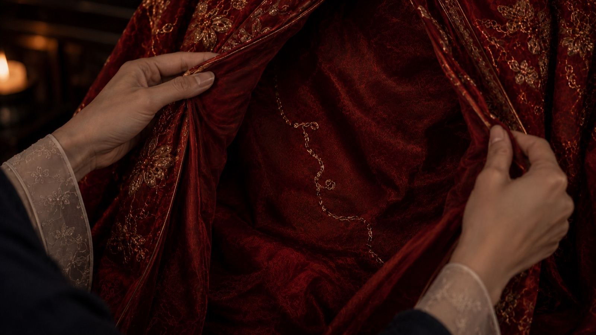
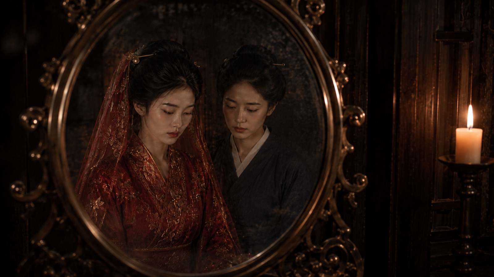
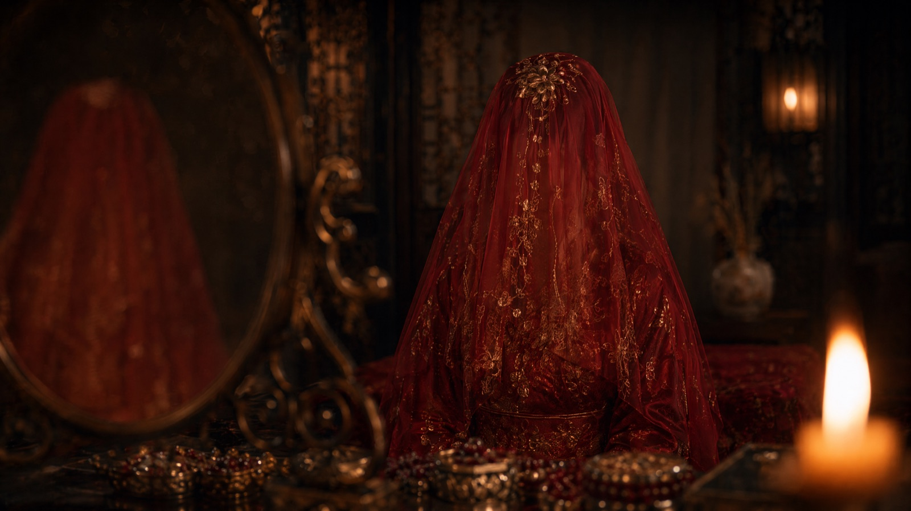
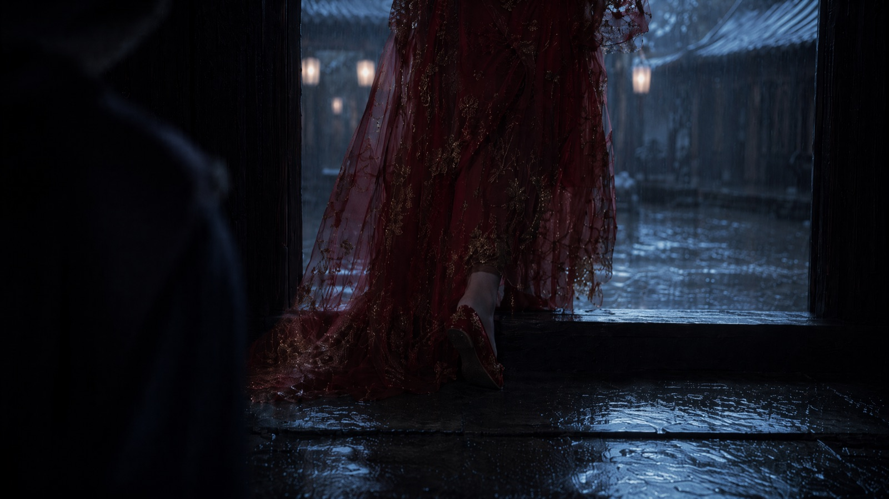
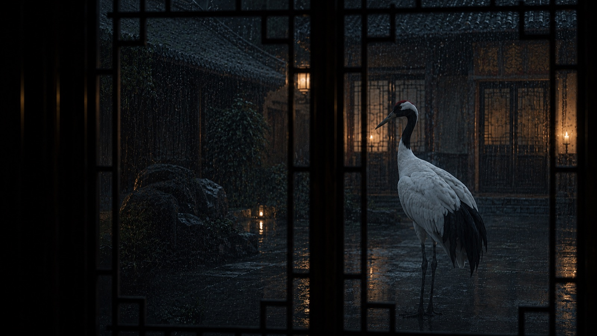

01/03 — FILM · 古装悬疑
笼中鹤
华丽即牢笼 · 中式古典女性悬疑短片 · 135 秒
STORY & SYSTEM · 故事与方法
把深宅拍成「美丽的牢笼」，不是恐怖屋。
红金婚服如枷锁被一层层「上锁」；嬷嬷在门外一遍遍施压「规矩」。两个沉默的人完成共谋：侍女青蘅穿上婚服替嫁，从正门离开——送嫁像押送，门槛是牢门；沈鸢一身素衣从偏门走出，拉断金线。片尾空镜，字幕只有五个字：「笼子空了。」
沈鸢不是软弱的受害者，而是早已看清牢笼、一直等待机会的人；白鹤是自由意象——干净、安静、真实、不发光，不要奇幻化，不要仙宠化。
- 构图门框、窗格、屏风、铜镜、床架构成「框中框」，人在框里
- 色彩低饱和暗红、木棕、青灰；不过强对比，红色不过饱和
- 声音发现路线图时音乐收空，只留雨声和呼吸声
- 结尾白鹤飞起后不要马上黑场，留一点空镜，观众才会有回味





METHOD · 四版脚本的迭代
- V1 片场指令版26 镜 / 135s — 十个部门片场指令，信息密度拉满
- V2 镜头摄像机版26 镜 / 135s — 焦段、T 值、机位、快门、遮幅
- V3 逐秒时间轴版26 镜 / 192s — 按秒执行，承认精确卡点在剪映完成
- V4 构图运镜强化版11 长镜 / 135s — 做减法：降低生成与剪辑成本
「婚服太华丽了。她们只会看见红，不会看见路。」—— 沈鸢台词